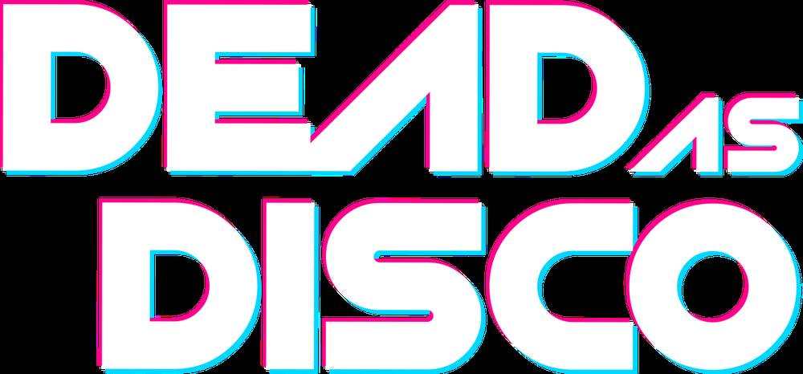
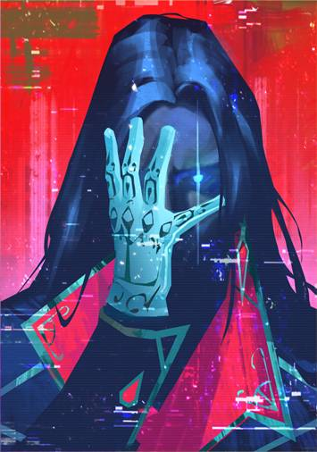

Soundtrack Guide
32 original tracks, boss themes, story music, and hidden songs. Every track in Dead As Disco, synced to the rhythm of revenge.
All 32 Tracks

01
Dead As Disco Theme
Upbeat disco-rock intro that sets the tone for Charlie's night of revenge. 80s-inspired driving beat with heavy guitar and synth hooks.

02
Story Mode
Resurrection
Tense, atmospheric. Charlie rises from the grave as the club lights flicker. Low drone with distant percussion builds to an explosive entrance.

03
Story Mode
Last Dance
Emotional mid-story track. Charlie confronts his past with the band. Melancholic piano meets driving bass — the calm before the storm.

04
Exploration
Ghost City
Neon-soaked city exploration theme. Mysterious and slightly eerie. Synth pads over steady 4/4 beat — perfect for nocturnal roaming.

05
Final Boss
The Encore (Reunion)
Grandiose, climactic showdown. All five Idols on stage together. Starts slow, builds to three phases matching the battle. BPM scales 140→160.

06
Infinite Disco
Endless Night
Driving bass, relentless energy. Perfect for high-score runs. Dynamic difficulty scaling as the session progresses. BPM: 138.

07
Boss Battles
Synthetic Dreams
Electronic-industrial boss theme. Pulsing and aggressive. Arora's theme — synth-pop with digital distortion. Master this beat for easier fights.
08
Chapter 1
Neon Streets
High-energy city exploration. Fits the early-game pace perfectly. Catchy synth melody with punchy drums.
09
Combat
Rhythm Revolt
Fast-paced combat anthem. Relentless energy for intense battles. Short, sweet, and deadly. BPM: 150.

10
Chapter 2
Flashback
Memory sequence track. Sparse instrumentation with emotional weight. The beat slows during key story moments — pay attention to cues.
11
Boss Theme
Harmony Corp
Corporate thriller vibe. Cold, calculated electronic beats. The antagonist's theme — menacing and precise.

12
Boss Theme
Night Terrors
Dark, industrial intensity. Heavy bass and distorted rhythms. Perfect for late-game boss encounters.
+ 20 more tracks in the full game...